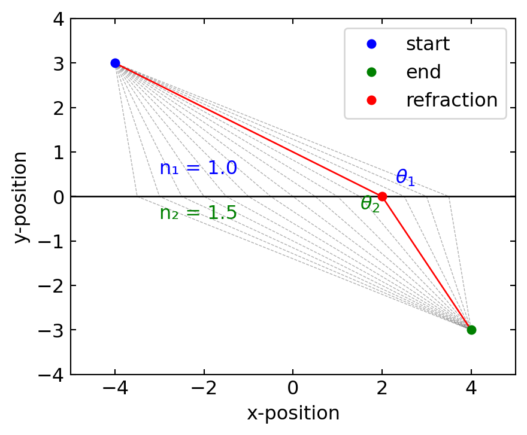

Light has been described through increasingly sophisticated theoretical frameworks throughout the history of physics. The simplest framework is Ray Optics or Geometrical Optics, which treats light as rays traveling along straight paths and applies geometrical principles to describe interactions with optical elements like lenses and mirrors. Moving beyond this approximation, Wave Optics introduces the wave nature of light, explaining phenomena such as interference and diffraction that ray optics cannot address. Electromagnetic Optics further refines our understanding by treating light as electromagnetic waves governed by Maxwell’s equations, providing a complete classical description of light-matter interactions. For intense light sources, Nonlinear Optics becomes essential, describing how materials respond nonlinearly to strong electromagnetic fields, giving rise to frequency conversion and other novel effects. Finally, at the most fundamental level, Quantum Optics treats light as consisting of photons—quantum mechanical particles exhibiting both wave and particle properties—essential for understanding phenomena like spontaneous emission, entanglement, and the quantum nature of light-matter interactions. This course will progressively build your understanding through these increasingly sophisticated frameworks.
Ray Optics
Ray optics, or geometric optics, provides a powerful framework for understanding light propagation when the wavelength is much smaller than the dimensions of optical elements involved. In this approach, light travels along straight lines called rays in homogeneous media, with well-defined paths that can be mathematically traced. This description serves as the foundation for analyzing many optical systems, from simple mirrors to complex microscopes and telescopes.
Fermat’s Principle: Integral and Differential Forms
Fermat’s Principle forms one of the foundations of ray optics, stating that light travels along the route that takes the total optical path length between any two points to an extremum (commonly a minimum). This optical path length, expressed mathematically as \(\int_C n(s)ds\), represents the effective distance light traverses through media of varying refractive indices. When this quantity is divided by the vacuum speed of light \(c_0\), it yields the total travel time required for light to journey between those points.
In its integral form:
\[\delta\int_C n(s)ds = 0\]
where \(n(s)\) is the refractive index along path \(C\) and \(ds\) is the differential path length.
The same principle can be expressed as a differential equation that describes how light bends in media with varying refractive indices:
This equation shows that rays bend toward regions of higher refractive index. In homogeneous media (\(\nabla n = 0\)), it simplifies to \(\frac{d^2\mathbf{r}}{ds^2} = 0\), confirming that light follows straight lines.
Optical Laws Derived from Fermat’s Principle
Reflection: At a planar interface, Fermat’s Principle directly yields the law of reflection:
\[\theta_i = \theta_r\]
where \(\theta_i\) is the angle of incidence and \(\theta_r\) is the angle of reflection, both measured from the normal to the surface.
Code
def calculate_path_length(x, start, end):"""Calculate the total path length from start to point x to end""" d1 = np.sqrt((x - start[0])**2+ (start[1])**2) d2 = np.sqrt((end[0] - x)**2+ (end[1])**2)return d1 + d2# Set up the figurefig, ax = plt.subplots(figsize=get_size(15, 10))# Define start and end pointsstart_point = (-4, 3)end_point = (4, 3)# X positions for different possible pathsx_positions = np.linspace(-3.5, 3.5, 15)# Calculate path lengthspath_lengths = [calculate_path_length(x, start_point, end_point) for x in x_positions]# Find the minimum path (Fermat's principle)min_index = np.argmin(path_lengths)min_x = x_positions[min_index]# Plot the horizontal line (interface)ax.axhline(y=0, color='black', linestyle='-', linewidth=1)# Plot all possible pathsfor i, x inenumerate(x_positions):if i == min_index:continue# Skip the minimum path for now# Create path verts = [ start_point, (x, 0), end_point ] codes = [ Path.MOVETO, Path.LINETO, Path.LINETO ] path = Path(verts, codes) patch = patches.PathPatch(path, facecolor='none', edgecolor='gray', linestyle='--', lw=0.5,alpha=0.65) ax.add_patch(patch)# Plot the minimum path (Fermat's Principle)verts = [ start_point, (min_x, 0), end_point]codes = [ Path.MOVETO, Path.LINETO, Path.LINETO]path = Path(verts, codes)patch = patches.PathPatch(path, facecolor='none', edgecolor='red', linestyle='-')ax.add_patch(patch)# Add dots for the pointsax.plot(start_point[0], start_point[1], 'bo', label='start point')ax.plot(end_point[0], end_point[1], 'go', label='end point')ax.plot(min_x, 0, 'ro', label='reflection Point')# Set labels and titleax.set_xlabel('x-position')ax.set_ylabel('y-position')ax.text(-0.7, -1, "mirror")# Set plot limits and legendax.set_xlim(-5, 5)ax.set_ylim(-4, 4)ax.set_aspect('equal')ax.legend()plt.tight_layout()plt.show()
Figure 1— Fermat’s principle for reflection of light at an interface
Reflection Law Derivation
For reflection at a planar interface, we consider a ray traveling from point A to point B via reflection at point P on a mirror, as illustrated in Fig. \(\ref{fig-fermat-reflection}\). The total path length is \(L = |AP| + |PB|\).
Let’s establish a coordinate system where the mirror lies along the x-axis at y = 0. If point A is at coordinates \((-a, h_1)\) and point B is at \((b, h_2)\), with the reflection point P at \((x, 0)\), the total path length is:
Now, let’s interpret this geometrically. The angle of incidence \(\theta_i\) is the angle between the incident ray AP and the normal to the mirror (y-axis). Similarly, the angle of reflection \(\theta_r\) is the angle between the reflected ray PB and the normal.
Since both angles are measured in the same quadrant (from the normal to the mirror), this equality implies: \[\theta_i = \theta_r\]
This is the law of reflection: the angle of incidence equals the angle of reflection.
Law of Reflection: The angle of incidence equals the angle of reflection. \[\theta_i = \theta_r\]
Refraction: Between media with different refractive indices, Fermat’s Principle yields Snell’s law:
\[n_1\sin\theta_1 = n_2\sin\theta_2\]
where \(\theta_1\) and \(\theta_2\) are the angles of incidence and refraction, respectively.
Code
def calculate_optical_path(x, start, end, n1, n2):"""Calculate the total optical path length from start to point x to end""" d1 = n1 * np.sqrt((x - start[0])**2+ (start[1])**2) # Optical path in medium 1 d2 = n2 * np.sqrt((end[0] - x)**2+ (end[1])**2) # Optical path in medium 2return d1 + d2# Set up the figurefig, ax = plt.subplots(figsize=get_size(15, 10))# Define start and end pointsstart_point = (-4, 3)end_point = (4, -3)# Define refractive indicesn1 =1.0# Medium 1 (above interface)n2 =1.5# Medium 2 (below interface)# X positions for different possible pathsx_positions = np.linspace(-3.5, 3.5, 15)# Calculate optical path lengthsoptical_paths = [calculate_optical_path(x, start_point, end_point, n1, n2) for x in x_positions]# Find the minimum path (Fermat's principle)min_index = np.argmin(optical_paths)min_x = x_positions[min_index]# Plot the horizontal line (interface)ax.axhline(y=0, color='black', linestyle='-', linewidth=1)# Plot all possible pathsfor i, x inenumerate(x_positions):if i == min_index:continue# Skip the minimum path for now# Create path verts = [ start_point, (x, 0), end_point ] codes = [ Path.MOVETO, Path.LINETO, Path.LINETO ] path = Path(verts, codes) patch = patches.PathPatch(path, facecolor='none', edgecolor='gray', linestyle='--', lw=0.5, alpha=0.65) ax.add_patch(patch)# Plot the minimum path (Fermat's Principle)verts = [ start_point, (min_x, 0), end_point]codes = [ Path.MOVETO, Path.LINETO, Path.LINETO]path = Path(verts, codes)patch = patches.PathPatch(path, facecolor='none', edgecolor='red', linestyle='-', lw=1)ax.add_patch(patch)# Add dots for the pointsax.plot(start_point[0], start_point[1], 'bo', label='start')ax.plot(end_point[0], end_point[1], 'go', label='end')ax.plot(min_x, 0, 'ro', label='refraction')# Calculate and draw angles# Incident raydx1 = min_x - start_point[0]dy1 =0- start_point[1]incident_angle = np.arctan2(-dy1, dx1)theta1 = np.pi/2- incident_angle# Refracted raydx2 = end_point[0] - min_xdy2 = end_point[1] -0refracted_angle = np.arctan2(dy2, dx2)theta2 = np.pi/2+ refracted_angle# Draw angle arcs# Add angle labelsax.text(min_x +0.3, 0.3, r'$\theta_1$', color='blue')ax.text(min_x -0.5, -0.3, r'$\theta_2$', color='green')# Set labels and titleax.set_xlabel('x-position')ax.set_ylabel('y-position')ax.text(-3, 0.5, f"n₁ = {n1}", color='blue')ax.text(-3, -0.5, f"n₂ = {n2}", color='green')# Set plot limits and legendax.set_xlim(-5, 5)ax.set_ylim(-4, 4)ax.set_aspect('equal')ax.legend()plt.tight_layout()plt.show()

Figure 2— Snell’s Law from Fermat’s Principle
Refraction Law Derivation
For refraction between two media with different refractive indices, we apply Fermat’s principle to find the path that minimizes the total optical path length. Consider a ray traveling from point A in medium 1 to point B in medium 2, with refraction occurring at point P on the interface, as illustrated in Fig. \(\ref{fig-fermat-refraction}\).
The total optical path length is:
\[L = n_1|AP| + n_2|PB|\]
To determine the exact refraction point P that minimizes this path, we establish a coordinate system with the interface along the x-axis at y = 0. If point A is at coordinates \((x_A, y_A)\) where \(y_A > 0\), and point B is at \((x_B, y_B)\) where \(y_B < 0\), with the refraction point P at \((x, 0)\), the total optical path length is:
Taking the sign into account based on our coordinate system, our minimization condition becomes:
\[n_1\sin(\theta_1) = n_2\sin(\theta_2)\]
This is Snell’s law, stating that the ratio of the sines of the angles of incidence and refraction equals the ratio of the refractive indices of the two media.
Snell’s Law: The ratio of the sines of the angles of incidence and refraction equals the reciprocal of the ratio of the refractive indices. \[n_1\sin\theta_1 = n_2\sin\theta_2\]
Figure 3— Snell’s law for different combinations of refractive indices. The plots show the relationship between incident angle (\(\theta_1\)) and refracted angle (\(\theta_2\)) for three scenarios: (a) light passing from air to glass, (b) light passing from glass to air, and (c) a comparison of both cases. Note how the curves differ when light moves into a medium with higher refractive index versus a lower refractive index.
Total Internal Reflection
When light travels from a medium with a higher refractive index (\(n_1\)) to one with a lower refractive index (\(n_2\)), a fascinating phenomenon can occur. As the angle of incidence increases, the refracted ray bends away from the normal until, at a critical angle, it travels along the boundary between the two media. Beyond this critical angle, light can no longer pass into the second medium and is instead completely reflected back into the first medium. This phenomenon is known as total internal reflection (TIR).
From Snell’s law, the critical angle \(\theta_c\) occurs when the refracted angle \(\theta_2 = 90°\):
For total internal reflection to occur, two conditions must be satisfied:
Light must travel from a higher to a lower refractive index medium (\(n_1 > n_2\))
The angle of incidence must exceed the critical angle (\(\theta_1 > \theta_c\))
From Fermat’s principle perspective, total internal reflection represents a scenario where no physical path through the second medium can satisfy the minimum optical path length requirement. Instead, the path of least time becomes the reflected path within the original medium. This phenomenon has numerous practical applications, including:
Fiber optic communication: Light signals travel long distances through optical fibers via successive total internal reflections with minimal loss
Prisms and reflectors: Total internal reflection in prisms provides perfect reflection without needing reflective coatings
Gemstones: The brilliance of diamonds results from light being trapped through multiple internal reflections
Optical instruments: Binoculars, periscopes, and endoscopes use prisms with TIR to redirect light
Total internal reflection demonstrates how Fermat’s principle enforces an absolute constraint on light’s behavior—when no path through the second medium can minimize the optical path length, light must remain in the first medium, following the path of least time.
Optical Fibers and Total Internal Reflection
Total internal reflection plays a crucial role in modern telecommunications, particularly in optical fibers, which are also part of many experimental setups. These fibers are essentially ultra-thin glass wires, ranging in diameter from a few micrometers to several hundred micrometers, designed to transport light over long distances with minimal loss.
The structure of an optical fiber is key to its function:
Core: A central glass core with a refractive index \(n_1\)
Cladding: A surrounding layer with a slightly lower refractive index \(n_2\)
This difference in refractive indices is what allows total internal reflection to occur within the fiber.
Figure 4— Total internal reflection in an optical fiber.
For light to propagate effectively through the fiber, it must enter at an angle that ensures total internal reflection at the core-cladding interface. This leads to the concept of the acceptance angle, \(\theta_a\), which is the maximum angle at which light can enter the fiber and still undergo total internal reflection.
To characterize this acceptance angle, optical engineers use a parameter called the Numerical Aperture (NA).
Numerical Aperture
The Numerical Aperture of a fiber is defined as the sine of the maximum acceptance angle:
\[\begin{equation}
NA = \sin(\theta_a) = \sqrt{n_1^2 - n_2^2}
\end{equation}\]
This equation relates the NA directly to the refractive indices of the core and cladding. The derivation of this formula involves applying Snell’s law at the air-fiber interface and at the core-cladding interface, then using the condition for total internal reflection.
In practice, typical values for the refractive indices might be \(n_1 = 1.475\) for the core and \(n_2 = 1.46\) for the cladding. Plugging these into our equation:
\[\begin{equation}
NA = \sqrt{1.475^2 - 1.46^2} \approx 0.2
\end{equation}\]
This means that light entering the fiber within a cone of about 11.5° (arcsin(0.2)) from the fiber’s axis will be transmitted through the fiber via total internal reflection.
The NA is an important parameter in fiber optic design:
It determines the light-gathering ability of the fiber.
It affects the fiber’s bandwidth and its susceptibility to certain types of signal distortion.
It influences how easily the fiber can be coupled to light sources and other fibers.
Optical fibers come in various types, each optimized for different applications. Some fibers are designed to transmit light over long distances with minimal loss, while others are engineered for specific wavelengths or to guide light in unusual ways. The figure below shows a few examples of optical fiber types.
Figure 5— Rendering of different optical fibers types (from left to right): Hollow core optical fiber, hollow core bragg fiber, photonic crystal fiber, conventional fiber
Differential Form of Fermat’s Law
To derive the differential ray equation from Fermat’s integral principle, we apply the calculus of variations. Starting with the optical path length functional:
Where \(\mathbf{r}(t)\) parametrizes the path. The term \(\left|\frac{d\mathbf{r}}{dt}\right|\) represents the differential element of arc length \(ds\) along the path, so \(ds = \left|\frac{d\mathbf{r}}{dt}\right| dt\). This parametrization allows us to convert the path integral over the curve \(C\) into a definite integral over the parameter \(t\). According to Fermat’s principle, the true path makes this integral stationary (δL = 0).
Consider a small variation in the path: \(\mathbf{r}(t) \rightarrow \mathbf{r}(t) + \epsilon\mathbf{\eta}(t)\) where \(\mathbf{\eta}(t_1) = \mathbf{\eta}(t_2) = 0\) (fixed endpoints). Expanding the variation of the integral to first order in ε:
Using the chain rule and reparametrizing with arc length \(s\) (where \(\frac{d\mathbf{r}}{ds}\) is a unit vector), the stationarity condition leads to:
This shows that rays bend toward regions of higher refractive index, directly analogous to how a mechanical particle’s trajectory is affected by a potential field in classical mechanics.
SELFOC Gradient Index Lens
SELFOC (SELf-FOCusing) gradient-index fibers are interesting optical elements that guide light through a continuous refraction process rather than discrete refractions at interfaces. Let me demonstrate how Fermat’s principle can be used to determine the ray paths in these fibers. A SELFOC fiber has a radially varying refractive index, typically following a parabolic profile:
where: - \(n_0\) is the refractive index at the central axis - \(r\) is the radial distance from the axis - \(\alpha\) is the gradient constant that determines how quickly the index decreases with radius
Fermat’s Principle in Gradient-Index Media
For a medium with a spatially varying refractive index, Fermat’s principle states that light follows the path that minimizes the optical path length:
For our parabolic index profile, the gradient of the refractive index is:
\[\nabla n = \frac{\partial n}{\partial r}\hat{\mathbf{r}} = -n_0\alpha^2 r \hat{\mathbf{r}}\]
Using cylindrical coordinates with z along the fiber axis, and assuming the paraxial approximation (rays make small angles with the z-axis), we can simplify the ray equation to:
\[\frac{d^2r}{dz^2} + \alpha^2 r = 0\]
This is the equation for a harmonic oscillator, which has the solution:
where \(r_0\) is the initial radial position and \(\theta_0\) is the initial angle of the ray with respect to the fiber axis.
Code
# Parametersn0 =1.5# Central refractive indexalpha =0.3# Gradient constant (mm^-1)length =30# Length of fiber (mm)radius =1.5# Radius of fiber (mm)# Create a grid for visualizationz = np.linspace(0, length, 300)r_grid = np.linspace(0, radius, 100)Z, R = np.meshgrid(z, r_grid)# Calculate refractive index at each pointN = n0 * (1-0.5* (alpha * R)**2)# Initialize ray pathsr0_values = [0.6, 1.0, 1.4] # Initial radial positionstheta0_values = [0, 0.2, -0.2] # Initial angles (all parallel to axis)# Plot setupfig, (ax1, ax2) = plt.subplots(1, 2, figsize=get_size(15, 5), gridspec_kw={'width_ratios': [3, 1]})# Plot the refractive index profile in the first subplotcmap = plt.cm.viridisextent = [0, length, -radius, radius]im = ax1.imshow(np.vstack((N[::-1], N)), extent=extent, aspect='auto', cmap=cmap, origin='lower',alpha=0.2)fig.colorbar(im, ax=ax1, label='n(y)')# Plot ray pathsfor r0, theta0 inzip(r0_values, theta0_values):# Calculate ray path r = r0 * np.cos(alpha * z) + (theta0/alpha) * np.sin(alpha * z)# Plot ray path ax1.plot(z, r, 'r-') ax1.plot(z, -r, 'r-') # Symmetric ray below axis# Add labels and title for first subplotax1.set_xlabel('z [mm]')ax1.set_ylabel('y [mm]')# For the right subplot, plot r-position vs refractive index# Create a finer array of radial positions for a smooth curver_positions = np.linspace(0, radius, 100)# Calculate refractive index at each radial positionn_profile = n0 * (1-0.5* (alpha * r_positions)**2)# Plot the refractive index profileax2.plot( n_profile,r_positions, 'k-')ax2.plot( n_profile,-r_positions, 'k-')# Set labels for the index profile subplotax2.set_xlabel('y [mm]')ax2.set_ylabel('n(y)')plt.tight_layout()plt.show()
Figure 6— Ray-path inside a SELFOC gradient index optical fiber.
Fermat’s Principle and the “F=ma” Analogy in Optics
This comparison, sometimes called “F=ma optics,” illustrates how light rays follow trajectories mathematically similar to those of mechanical particles. To see this connection more clearly, we can expand the ray equation as:
Using the chain rule, \(\frac{dn}{ds} = \nabla n \cdot \frac{d\mathbf{r}}{ds}\), and denoting \(\mathbf{t} = \frac{d\mathbf{r}}{ds}\) as the unit tangent vector along the ray:
\[n\frac{d^2\mathbf{r}}{ds^2} + (\nabla n \cdot \mathbf{t})\mathbf{t} = \nabla n\]
Rearranging to isolate the ray curvature term:
\[n\frac{d^2\mathbf{r}}{ds^2} = \nabla n - (\nabla n \cdot \mathbf{t})\mathbf{t}\]
The right side represents the component of \(\nabla n\) perpendicular to the ray direction, which we can denote as \((\nabla n)_\perp\). Therefore:
This equation reveals that the ray curvature is proportional to the perpendicular component of the refractive index gradient and inversely proportional to the refractive index itself. Crucially, this shows that light rays bend toward regions of higher refractive index, not away from them.
This behavior explains many optical phenomena:
Light bending toward the normal when entering a medium with higher refractive index
Light guiding in optical fibers where light remains confined in the higher-index core
Formation of mirages where light curves toward the denser air near the ground
Focusing in gradient-index (GRIN) lenses where the refractive index decreases radially from the center
While the mathematical form resembles Newton’s equation for particle motion, the analogy must be carefully interpreted: unlike particles that accelerate toward lower potential energy, light rays curve toward regions of higher refractive index.
Code
# Parametersn0 =1.5# Base refractive index (center value)n_min =1.0# Minimum refractive index (at edges)x_range = np.linspace(-5, 5, 100)y_range = np.linspace(-5, 5, 100)X, Y = np.meshgrid(x_range, y_range)# Calculate radial distance from centerR = np.sqrt(X**2+ Y**2)# Max radius in our plotR_max =5*np.sqrt(2)# Create a refractive index profile that decreases with radius# but never goes below n_mingradient_strength = (n0 - n_min)/R_max # Calculate appropriate gradient strengthn = n0 - gradient_strength * R # Linear decrease with radius# Set up the figurefig, ax = plt.subplots(figsize=get_size(12, 10))# Plot the refractive index as a contour plotcontour = ax.contourf(X, Y, n, 20, cmap='viridis', alpha=0.3)cbar = fig.colorbar(contour, ax=ax, label='Refractive Index')# Calculate and plot some ray trajectories# We'll simulate the paths by numerical integrationdef ray_path(r0, v0, steps=1000, dt=0.05):"""Simulate a ray path through the medium""" r = np.zeros((steps, 2)) v = np.zeros((steps, 2)) r[0] = r0 v[0] = v0 / np.linalg.norm(v0) # Normalize velocityfor i inrange(1, steps):# Get position x, y = r[i-1]ifabs(x) >=5orabs(y) >=5:return r[:i]# Approximate gradient of n at this point eps =0.01 nx_plus = n0 - gradient_strength * np.sqrt((x+eps)**2+ y**2) nx_minus = n0 - gradient_strength * np.sqrt((x-eps)**2+ y**2) ny_plus = n0 - gradient_strength * np.sqrt(x**2+ (y+eps)**2) ny_minus = n0 - gradient_strength * np.sqrt(x**2+ (y-eps)**2) grad_n_x = (nx_plus - nx_minus) / (2*eps) grad_n_y = (ny_plus - ny_minus) / (2*eps) grad_n = np.array([grad_n_x, grad_n_y])# Current n value current_n = n0 - gradient_strength * np.sqrt(x**2+ y**2)# Calculate the perpendicular component of gradient t = v[i-1] / np.linalg.norm(v[i-1]) # Tangent vector (normalized velocity) grad_n_parallel = np.dot(grad_n, t) * t # Component along ray direction grad_n_perp = grad_n - grad_n_parallel # Perpendicular component# Update velocity - rays bend toward higher refractive index a = grad_n_perp / current_n v[i] = v[i-1] + a * dt v[i] = v[i] / np.linalg.norm(v[i]) # Ensure unit speed# Update position r[i] = r[i-1] + v[i] * dtreturn r# Calculate several ray pathsstart_positions = [ [-4, 2.5], [-4, 1.5], [-4, 0.5], [-4, -0.5], [-4, -1.5], [-4, -2.5]]paths = []for start_pos in start_positions: path = ray_path(start_pos, [1, 0], steps=500) paths.append(path) ax.plot(path[:, 0], path[:, 1], 'r-', linewidth=1.5)# Add start pointsfor pos in start_positions: ax.plot(pos[0], pos[1], 'ro')# Add axis labelsax.set_xlabel('x position')ax.set_ylabel('y position')ax.set_xlim(-5, 5)ax.set_ylim(-5, 5)ax.set_aspect('equal')ax.grid(True, alpha=0.3)plt.tight_layout()plt.show()
Figure 7— F=ma optics - Light rays (red) following paths toward regions of higher refractive index
Lenses
Lenses are among the most fundamental optical elements in photonics, using curved surfaces (typically spherical) to manipulate light paths. Understanding how lenses work requires analyzing refraction at spherical surfaces and applying this to the thin lens model.
Refraction at Spherical Surfaces
When light encounters a spherical boundary between two media, we can analyze its path using Snell’s law and geometric considerations as shown below:
Figure 8— Refraction at a curved surface.
To determine how an image forms, we need to find where rays originating from a point at distance \(a\) from the surface will converge after refraction. Using Snell’s law for a ray hitting the surface at angle \(\alpha+\theta_1\):
This linear relationship between input (\(y\), \(\theta_1\)) and output (\(\theta_2\)) parameters is a hallmark of paraxial optics.
Paraxial Approximation
The paraxial approximation is a fundamental simplification in optics that assumes all angles are small. This allows us to use linear approximations for trigonometric functions, significantly simplifying calculations while maintaining accuracy for most practical scenarios involving lenses.
To visualize the validity of this approximation, let’s examine two plots:
The first plot compares sin(θ) (blue line) with its linear approximation θ (red dashed line) for angles ranging from 0 to π/2 radians.
The second plot shows the absolute error between sin(θ) and θ.
These plots demonstrate that:
For small angles (roughly up to 0.5 radians or about 30 degrees), the approximation is very close to the actual sine function.
The error increases rapidly for larger angles, indicating the limitations of the paraxial approximation.
In most optical systems, especially those involving lenses, the angles of incident and refracted rays are typically small enough for this approximation to be valid. However, it’s important to be aware of its limitations when dealing with wide-angle optical systems or scenarios where precision is critical.
Code
import numpy as npimport matplotlib.pyplot as plt# Define the range of angles (in radians)theta = np.linspace(0, np.pi/2, 1000)# Calculate sin(theta) and theta (linear approximation)sin_theta = np.sin(theta)linear_approx = theta# Calculate the absolute errorerror = np.abs(sin_theta - linear_approx)# Create the plot with two subplots side by sidefig, (ax1, ax2) = plt.subplots(1, 2, figsize=(7.5, 4))# Plot sin(theta) and theta on the first subplotax1.plot(theta, sin_theta, label='sin(θ)', color='blue')ax1.plot(theta, linear_approx, label='θ', color='red', linestyle='--')ax1.set_xlabel(r'$\theta$[rad]')ax1.set_ylabel(r'$\sin(x),x$')ax1.legend()# Plot the error on the second subplotax2.plot(theta, error, label='Absolute Error', color='green')ax2.set_xlabel(r'$\theta$[rad]')ax2.set_ylabel('|sin(θ) - θ|')ax2.legend()# Adjust the layout and display the plotplt.tight_layout()plt.show()
Visualization of the paraxial approximation plotting the \(\sin(\theta)\) and the linear approximation \(\theta\) (dashed line) for angles ranging from 0 to \(\pi/2\) radians.
To derive the imaging equation, we analyze how light from a point object forms an image after refraction. Consider two special rays from an off-axis point:
Figure 9— Image formation at a curved surface.
For a ray parallel to the optical axis (\(\theta_1=0\)):
where the focal length of the refracting surface is given by:
\[f=\frac{n_2}{n_2-n_1}R\]
in the paraxial approximation.
Thin Lens
A lens consists of two spherical surfaces in close proximity. To analyze how a lens forms images, we consider refraction at both surfaces:
Figure 10— Refraction on two spherical surfaces.
When the lens thickness \(d\) is much smaller than the radii of curvature (\(d \ll R_1, R_2\)), we can apply the thin lens approximation. This assumes: 1. The ray height at both surfaces is approximately equal (\(y \approx y'\)) 2. All refraction effectively occurs at a single plane (the principal plane) 3. The change in angle is additive from both surfaces
This approximation, combined with the sign convention for radii (positive for convex surfaces facing incoming light, negative for concave), leads to the thin lens formula:
Imaging Equation for Thin Lens
The sum of the inverse object and image distances equals the inverse focal length of the thin lens:
This can be rearranged to give the lensmaker equation:
Lensmaker Equation
The focal length of a thin lens is calculated by: \[f=\frac{n_1}{n_2-n_1}\left(\frac{R_1 R_2}{R_2-R_1}\right)\]
in the paraxial approximation.
Image Construction and Magnification
To construct the image formed by a lens, we typically trace two or three special rays: 1. A ray parallel to the optical axis, which passes through the far focal point after refraction 2. A ray through the center of the lens, which passes undeflected 3. A ray through the near focal point, which emerges parallel to the optical axis
The intersection of these rays locates the image position:
Figure 11— Image construction on a thin lens.
The ratio of image height to object height defines the magnification:
where the negative sign indicates image inversion for real images.
The image characteristics depend on the object distance relative to the focal length:
Object Position
Image Characteristics
Magnification (M)
Image Type
\(a < f\)
Upright and magnified
\(M > 0\)
Virtual
\(f < a < 2f\)
Inverted and magnified
\(M < -1\)
Real
\(a = 2f\)
Inverted, same size
\(M = -1\)
Real
\(a > 2f\)
Inverted and reduced
\(-1 < M < 0\)
Real
\(a = f\)
Image at infinity
\(M = \infty\)
-
The diagram below illustrates these various imaging scenarios for a biconvex lens:
Fig.: Image construction on a biconvex lens with a parallel and a central ray for different object distances.
Matrix Optics
The above derived equations for a single spherical surface yield a linear relation between the input variables \(y_1\) and \(\theta_1\) and the output variables \(y_2\) and \(\theta_2\). The linear relation yields a great opportunity to express optical elements in terms of linear transformations (matrices). This is the basis of matrix optics. The matrix representation of a lens is given by
This is a very powerful tool to analyze optical systems.
Fermat’s Principle for Spherical Surfaces
The power of Fermat’s principle becomes particularly evident when applied to spherical refracting surfaces. Consider a spherical boundary of radius \(R\) between two media with refractive indices \(n_1\) and \(n_2\). According to Fermat’s principle, light will follow the path that minimizes the total optical path length.
Code
import numpy as npimport matplotlib.pyplot as pltfrom matplotlib.patches import Arc, Wedgeimport matplotlib.patches as patches# Set up the figurefig, ax = plt.subplots(figsize=get_size(15, 10))# ParametersR =3# Radius of the spherical surfacen1 =1.0# Refractive index of first mediumn2 =1.5# Refractive index of second mediumarc_angle =100# Arc angle in degreescenter_x =3# Center of arc is to the right of the boundary# Define the center of the spherecenter = (center_x, 0)# Calculate arc angles in radiansstart_angle =180- arc_angle/2end_angle =180+ arc_angle/2# Draw the spherical surface as an arcarc = Arc(center, 2*R, 2*R, theta1=start_angle, theta2=end_angle, color='black', linewidth=1.5)ax.add_patch(arc)# Calculate the x-coordinate of the leftmost point of the arcboundary_x = center_x - R * np.cos(np.radians(90- arc_angle/2))# Draw the media boundaryax.fill_between([-8, boundary_x], [-8, -8], [8, 8], color='lightblue', alpha=0.2)ax.fill_between([boundary_x, 12], [-8, -8], [8, 8], color='lightgreen', alpha=0.2)ax.axvline(x=boundary_x, color='black', linestyle='-', linewidth=1)# Add labels for the mediaax.text(boundary_x-3, 3, f"n₁ = {n1}", fontsize=12)ax.text(boundary_x+2, 3, f"n₂ = {n2}", fontsize=12)# Mark object and image pointsobject_point = (boundary_x-3, 0)image_point = (center_x+6, 0)ax.plot(object_point[0], object_point[1], 'bo', markersize=8, label='Object (A)')ax.plot(image_point[0], image_point[1], 'ro', markersize=8, label='Image (B)')# Calculate different potential paths along the arctheta_rad = np.linspace(np.radians(start_angle), np.radians(end_angle), 15)paths = []optical_lengths = []for theta in theta_rad:# Position on the arc x = center_x + R * np.cos(theta) y = R * np.sin(theta)# Calculate distances d1 = np.sqrt((x - object_point[0])**2+ (y - object_point[1])**2) d2 = np.sqrt((x - image_point[0])**2+ (y - image_point[1])**2)# Calculate optical path length optical_length = n1 * d1 + n2 * d2 paths.append((x, y)) optical_lengths.append(optical_length)# Find the minimum optical pathmin_index = np.argmin(optical_lengths)min_path = paths[min_index]# Plot all potential pathsfor i, (x, y) inenumerate(paths):if i == min_index:continue ax.plot([object_point[0], x, image_point[0]], [object_point[1], y, image_point[1]],'gray', linestyle='--', alpha=0.5, linewidth=0.8)# Plot the path of minimum optical length (Fermat's principle)ax.plot([object_point[0], min_path[0], image_point[0]], [object_point[1], min_path[1], image_point[1]],'red', linewidth=2, label='Minimum optical path')# Set up the main plotax.set_xlim(-4, 12)ax.set_ylim(-4, 4)ax.set_xlabel('Position')ax.set_ylabel('Height')ax.grid(True, alpha=0.3)ax.axhline(y=0, color='gray', linestyle='--', alpha=0.7)ax.legend(loc='lower right')plt.tight_layout()plt.show()
Figure 12— Fermat’s principle applied to a spherical refracting surface
When we apply Fermat’s principle to a spherical surface, we can derive the laws of refraction. Consider a spherical boundary between two media with refractive indices \(n_1\) and \(n_2\). We’ll place our coordinate system so that the spherical surface intersects the x-axis at x=0, with radius R and its center at position (R,0) to the right.
For a point P on the spherical surface at height y from the optical axis, the total optical path length from object point A at (-a,0) to image point B at (b,0) is:
This equation is incorrect. The right-hand side should not be zero because we need to account for the geometry of the spherical surface. The correct form includes the effect of the surface normal:
This correction comes from the fact that at point P, the normal to the spherical surface makes an angle α with the optical axis, where sin(α) ≈ y/R in the paraxial approximation.
This is the correct imaging equation for a spherical refracting surface.
The elegance of Fermat’s principle is preserved, as it still naturally produces the same result as our geometric derivation, once we properly account for the geometry of the refracting surface.
Deriving the Thin Lens Equation from Fermat’s Principle
To derive the thin lens equation, we apply Fermat’s principle to the two spherical surfaces that make up a lens. Consider a lens with refractive index \(n_2\) in a medium of index \(n_1\), with surface radii \(R_1\) and \(R_2\).
The total optical path for a ray passing through the lens at height \(y\) from the optical axis is: - Path from object to first surface: \(n_1 s_1\) - Path through the lens: \(n_2 s_2\) - Path from second surface to image: \(n_1 s_3\)
For a thin lens, the optical path length simplifies to:
Thus, both the imaging equation and the lensmaker equation emerge naturally from Fermat’s principle applied to the geometry of a thin lens, showing that light follows paths of equal optical length from object to image when passing through any part of the lens.
From a wave perspective, what makes a lens focus light to a point is that all paths from object to image through any part of the lens have equal optical path lengths (to first order in the paraxial approximation), ensuring constructive interference at the image point.